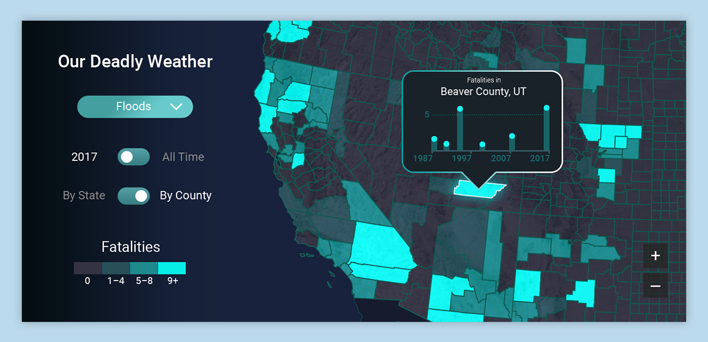

Overview
Inhabit is an ad-tech product developed by Arkadium which allows news publishers to programmatically insert interactive infographics based on an article’s content. During my summer internship, I worked on designing new data visualizations and infographics possibilities for Inhabit to select from.
I was the primary designer working on a new visualization about deadly weather. Based on research provided by the company’s editorial team, I created multiple iterations of the design before getting a final design approved by the team’s art director for development.
Final Design
Since the goal of Inhabit is to improve engagement time for new publishers, I went went an attention grabbing neon color palette for the map. The UI is designed so that every knob and button will trigger an update to the map, keeping the user engaged with the visualization. 
Design Process
Sketches and wireframes
I went explored multiple ideas on paper before reaching an design I would explore further with digital mockups.
Initial Design
My first idea was to create a quiz, but I received feedback that the graphic looked vaguely like spam and the state flags imposed on each state looked unattractive, so a different direction was taken.
Second Iteration
I continued with the quiz idea, but instead tried to add icons to represent each state. This looked visually better, but I wanted to keep exploring because I felt that icons were too childish for the seriousness of the topic.
Exploration of 3D
At this point, I attempted something entirely different and created pseudo-3d map visualizing statistics of each state. I disliked the visual design of this iteration the most, but it inspired me to think in terms of maps for the next iteration, so this iteration was still very helpful.
Final Iteration
I used what I learned from the previous iterations to create final version, which combines the more exciting color palettes of earlier designs with the use of the map in the third iteration.